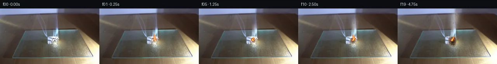

![首帧]()

Round 00
2026-11-05T09:35:25.352213+00:00像素候选变化代码 +196/−0inspection 更新
pixels 4c5344b3ce17a0ec · code 1d636cefdfa3f33a
查看本轮 generate.py 真实 diff
--- previous/generate.py
+++ current/generate.py
@@ -0,0 +1,196 @@
+#!/usr/bin/env python3
+"""Generate a deterministic locked-camera paper-burning continuation.
+
+All synthesis is local NumPy/Pillow pixel work. Frame zero is copied from the
+provided source without alteration; later frames add only analytic combustion,
+paper charring, glow, and advected smoke.
+"""
+
+from pathlib import Path
+
+import numpy as np
+from PIL import Image, ImageDraw, ImageFilter
+from scipy.ndimage import gaussian_filter
+
+from artifact_io import save
+
+
+ROOT = Path(__file__).resolve().parent
+W, H = 256, 144
+YY, XX = np.mgrid[0:H, 0:W].astype(np.float32)
+
+
+def composite(frame, color, alpha):
+ """Alpha composite one RGB color/field into a float RGB frame."""
+ a = np.clip(alpha, 0.0, 1.0)[..., None]
+ c = np.asarray(color, dtype=np.float32)
+ if c.ndim == 1:
+ c = c[None, None, :]
+ return frame * (1.0 - a) + c * a
+
+
+def paper_support(base):
+ """Soft mask for only the measured bright folded-paper component."""
+ lum = base.astype(np.float32).mean(axis=2)
+ chroma = base.max(axis=2).astype(np.float32) - base.min(axis=2).astype(np.float32)
+
+ # Numeric first-frame measurements constrain the paper to this polygon.
+ poly = Image.new("L", (W, H), 0)
+ ImageDraw.Draw(poly).polygon(
+ [(122, 73), (149, 71), (152, 78), (149, 98),
+ (141, 101), (128, 94), (121, 86)], fill=255
+ )
+ region = np.asarray(poly, dtype=np.float32) / 255.0
+ brightness = np.clip((lum - 116.0) / 72.0, 0.0, 1.0)
+ neutrality = np.clip((92.0 - chroma) / 55.0, 0.25, 1.0)
+ return region * brightness * neutrality
+
+
+def make_texture():
+ """Deterministic low-frequency texture used to break analytic edges."""
+ rng = np.random.default_rng(140)
+ fine = gaussian_filter(rng.normal(size=(H, W)).astype(np.float32), 1.0)
+ broad = gaussian_filter(rng.normal(size=(H, W)).astype(np.float32), 4.3)
+ fine = (fine - fine.mean()) / (fine.std() + 1e-6)
+ broad = (broad - broad.mean()) / (broad.std() + 1e-6)
+ return 0.62 * fine + 0.38 * broad
+
+
+TEXTURE = make_texture()
+
+
+def add_char(frame, base, t, support):
+ """Darken the paper locally with a growing irregular char and ochre rim."""
+ progress = np.clip((t - 1.0) / 18.0, 0.0, 1.0)
+ if progress <= 0:
+ return frame
+
+ cx = 140.2 + 0.45 * np.sin(t * 0.38)
+ cy = 83.0 + 1.1 * progress
+ rx = 2.1 + 8.3 * progress
+ ry = 2.6 + 10.1 * progress
+ dist = np.sqrt(((XX - cx) / rx) ** 2 + ((YY - cy) / ry) ** 2)
+ irregular = dist + 0.085 * TEXTURE
+
+ core = np.clip((0.98 - irregular) * 6.0, 0.0, 1.0) * support
+ rim = np.clip(1.0 - np.abs(irregular - 1.03) / 0.22, 0.0, 1.0) * support
+ soot = np.clip((0.58 - irregular) * 5.0, 0.0, 1.0) * support
+
+ frame = composite(frame, (91, 52, 27), rim * (0.25 + 0.38 * progress))
+ frame = composite(frame, (55, 38, 27), core * (0.30 + 0.58 * progress))
+ frame = composite(frame, (24, 21, 19), soot * (0.20 + 0.64 * progress))
+ return frame
+
+
+def add_firelight(frame, t):
+ """Add restrained reflected warmth immediately around the burn."""
+ pulse = 0.78 + 0.18 * np.sin(t * 1.73) + 0.08 * np.sin(t * 3.11)
… diff truncated; 109 more lines …